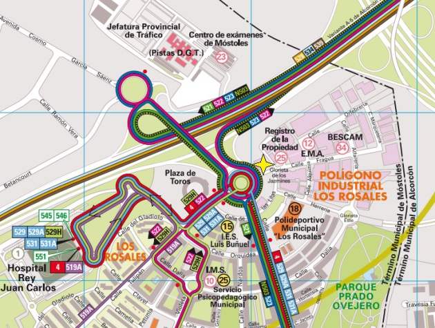

Cursos de reciclaje metal de 4 horas
Renovación de la formación en prevención de riesgos laborales del sector metal.
TPC Sector del Metal
Tarjeta profesional de la construcción para el metal (TPC).
CURSOS TARJETA PROFESIONAL DE LA CONSTRUCCIÓN SON VÁLIDOS SÓLO PRESENCIALMENTE
Cursos de 6h, 8h, 20h y 60 horas. Formación en materia de prevención de riesgos laborales. Cursos todos los días de la semana.
Renovación de la formación en prevención de riesgos laborales del sector metal.
Metal, albañilería, encofrados, pladur, ferralla, impermeabilizaciones, fontanería, climatización, electricidad y pintura.
Formación de 8 horas en prevención de riesgos laborales.
Parte común y curso específico.
Nivel básico de prevención de riesgos laborales.
Formación para directivos en modalidad on-line.
CURSOS TARJETA PROFESIONAL DE LA CONSTRUCCIÓN SON VÁLIDOS SÓLO PRESENCIALMENTE
Si precisa más información sobre los cursos para la obtención de la TPC, puede consultarla a través de la web www.prevencionmadrid.es, o puede contactarnos directamente a través del correo info@prevencionmadrid.es o llamándonos a los teléfonos 630 29 25 16 y 91 617 04 23.
El Acuerdo Estatal del Sector del Metal que incorpora nuevos contenidos sobre formación y promoción de la seguridad y salud en el trabajo y que suponen la modificación y ampliación del mismo (Resolución de 12 de mayo de 2009, de la Dirección General de Trabajo, por la que se registra y publica la modificación del Acuerdo estatal del sector del metal) incorpora entre otras la siguiente modificación:
La disposición transitoria tercera a) queda redactada de la siguiente manera:
a) La formación exigible a los trabajadores del sector del metal que presentan servicios en obras de construcción, es la establecida en el anexo III, dichos contenidos formativos vigentes desde el 23 de agosto de 2008 entrarán en vigor a partir del 1 de enero de 2010.
Convocatorias presenciales de lunes a viernes en nuestro centro de Móstoles. Cursos que impartimos:

Calendario de convocatorias presenciales en nuestro centro de Móstoles, actualizado al día. Llámenos para reservar plaza.
Convocatorias abiertas y pendientes en nuestro centro de Móstoles, por semanas de lunes a domingo. Actualizado el 28/08/2026 a las 22:54. Fechas en formato dd/mm/aaaa. Llame para reservar plaza.
El calendario completo, día a día:
La Tarjeta Profesional de la Construcción es un documento por el que se acredita la formación recibida en materia de prevención de riesgos laborales, los periodos de ocupación en las empresas en que ejerciera su actividad y la categoría profesional.
Es un soporte que permite certificar que los trabajadores, los trabajadores de nueva incorporación y los trabajadores pertenecientes a las empresas subcontratistas tienen al menos la formación en materia de prevención de riesgos laborales.
Una vez realizado el curso con nosotros, tiene que ir a un punto de tramitación tales como los centros de la FLC (Fundación Laboral de la Construcción), Asociaciones empresariales CNC de la Confederación Nacional de la Construcción o Federaciones Sindicales de la Construcción, Madera y afines de Comisiones Obreras (FECOMA-CC.OO.) y Metal, Construcción y afines a la Unión General de Trabajadores (MCA-UGT).
El más cercano a nuestro centro está en Calle Cámara de la Industria, 23, 28938 Móstoles, Madrid.
¿Podemos ayudarle? Póngase en contacto con nosotros.